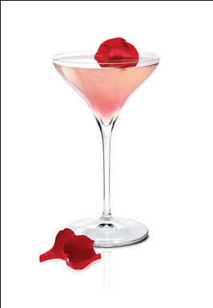

Glamorous Cardomon and Hibiscus Infused Coctail
| Prep Time |
Difficulty |
Taste level |
| One Month |
Extremely Challenging |
Seven Stars |
Ingredients
- Rum
- Hibiscus Flowers
- Cardomon Pods
- Fresh Lime Lime Leaves
- Lime Juice
- Simple Syrup
Directions
- Add Ingredients and mix
- Let sit for one month or more
- Shake With ice and bitters
- Add simple syrup and lime juice
- Garnish with a Rose Pedal
- Drink
Coctail Recipes
by: Winter Ramos

Photo Credit Winter Ramos
For more of his photos go to... Winter's Photos.